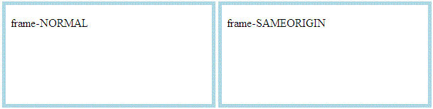

Print Preview Demo
Note, this demo is only for Internet Explorer 8 and below.
Steps to Test
- Before using the Print Preview, ensure that both <iframe> contents below look like the Example Image.
- In the browser's application menu, click [File] > [Print Preview...]
- In the Print Preview window, ensure that both <iframe> contents below look like the Example Image.
Example Image
